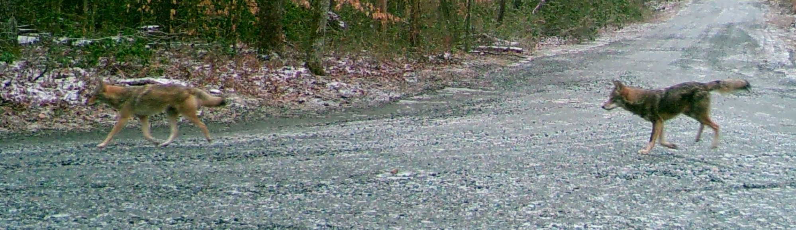

Prince William Forest Park

National Park Service
Prince William Forest Park is full of wonder and excitement. From charteruse leaves to crystal waters, the park was established in 1936 and was once known as the Chopawamsic Recreational Demonstration Area, before being renamed Prince William Forest Park in 1948. The park is the largest protected natural area in the Washington, D.C. metropolitan region at over 13,000 acres.
ExploreVisitor Information Location Address Operating Hours Park Details Frequently Asked Questions |
Visitor Information
LocationAddress18170 Park Entrance Rd, Triangle, VA 22172 DirectionsFrom Washington, D.C. and points north: Take I-95 south to exit 150-B (VA Route 619/Joplin Road). The park entrance is the second right. From Fredericksburg and points south: Take I-95 north to exit 150 (VA Route 619/Joplin Road). Turn left at the bottom of the exit ramp and continue on VA Route 619 West approximately 1/4 mile to the park entrance. Phone703-221-7181 |
Operating HoursThe park is open for visit every day, from sunrise through sunset. Visitor Center
The visitor center is closed on Thanksgiving Day, Christmas Day, and New Year's Day. |
|
| Pass | Price |
|---|---|
| Standard | $10–$20 |
| Annual | $35 |
| America the Beautiful | Free–$80 |
Standard Pass: Standard passes are optimal for one-time visits, which are valid for seven consecutive days (or one week). Two types are relegated depending on the mode of transport—one for motorized vehicles such as a car or a motorcycle, and one walk-ins by foot.
Annual Pass: Annual passes are optimal for multiple visits within a span of a year. Passes grant unlimited entry throughout the year until the end of the month of purchase. It covers all individuals in a vehicle or up to three additional guests on foot.
America the Beautiful Pass: A nationwide pass that covers many National Parks within the country. Covers entrance fees at many parks as well as standard amenity (day-use) fees. There are roughly different eight passes, made for senior citizens, veterans, youths, and volunteers, spanning from annual to lifetime membership.
WeatherPrince William Forest Park experiences all four seasons. Spring and fall are generally comfortable with precipitation possible. Summers can be hot and humid with average temperatures in the high 80s and with sudden thunderstorms possible. July and August are the hottest months. Winters can be cold with average temperatures in the winter of 41 degrees with variable precipitation. The main park roads can close due to snowy conditions, though cross-country skiing and snow-shoeing are permitted. Internet AccessPublic Wi-Fi is not available. While cellular service in the park is reliable in most areas of the park including the visitor center, picnic areas, parking lots, and Turkey Run Group Campground, cellular service may be interrupted in Loop C of Oak Ridge Campground, Cabin Camp 2, and the dining hall in Cabin Camp 5. Cellular service may be intermittent next to the Quantico Creek, hemmed in with steep hillsides. |
Frequently Asked Questions
Where can I see wildlife?
Much of the wildlife in the park is active at dawn and dusk. These are prime times to look for deer, fox, and beaver. North Valley Trail is especially good. The park's scenic drive is a great place to catch a glimpse of deer, and is good for birding throughout much of the year. Do not feed any wildlife in the park.
Can we ride horses in the park?
No.
Can we bring canoes or kayaks to the park?
Vessel use is allowed by cabin camp groups only with a reservation and boaters under 12 must be monitored by an adult.
Is there any place to swim in the park?
Swimming is prohibited in Lakes 1-5, except by permitted cabin camp groups. Swimmers under 12 must be monitored by an adult. You can wade in the streams. Swimming at the Prince William Forest RV Campground pool is restricted to registered guests only.

National Park Service